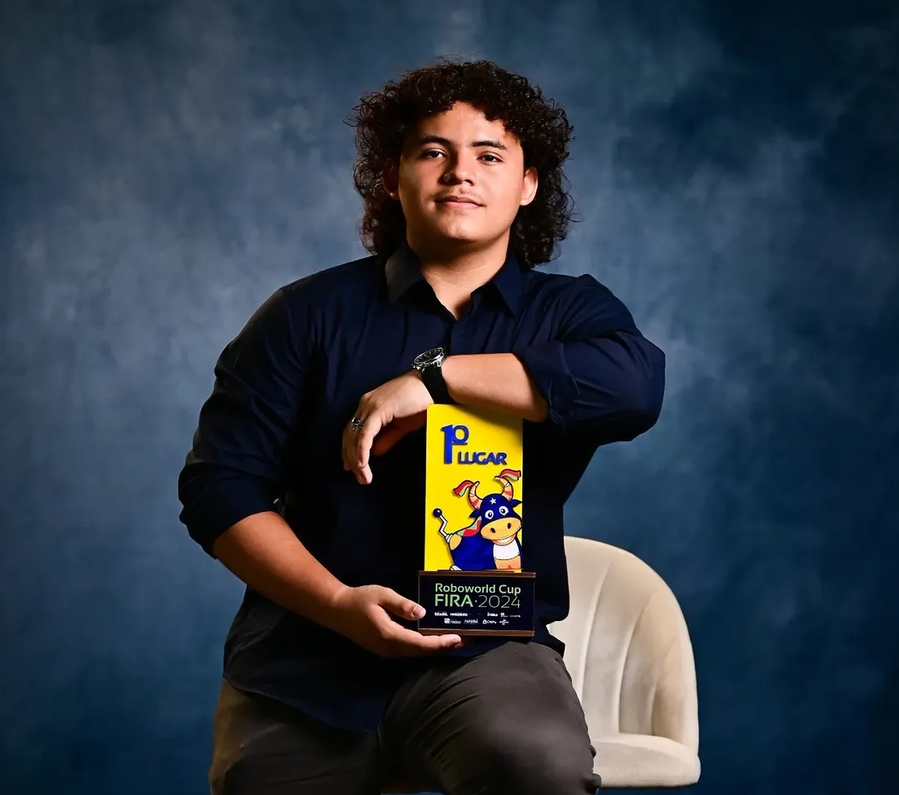

Seu sistema, do início ao fim
Posso desenvolver aplicações web com interfaces responsivas e regras de negócio para organizar processos.
Olá, sou Murillo Alves
Desenvolvedor Full Stack · Engenharia da Computação
Posso ajudar a tirar seu sistema do papel: desenvolver interfaces web, construir APIs e integrar bancos de dados. Conecto software e hardware para resolver problemas com tecnologia.

Sou desenvolvedor Full Stack e estudante de Engenharia da Computação na UEMA. Gosto de entender como as coisas funcionam — e de construir o que vem depois.
Na Plus Media Ads, desenvolvo sistemas com PHP, SQL e React. Meu foco atual de estudo e projetos é o backend com Java e Spring Boot, aprofundando conhecimentos em APIs REST, modelagem de dados e arquitetura de software.
Essa vontade de experimentar também me levou à robótica competitiva e à Vórtex Racing, onde atuo como trainee em sistemas embarcados e telemetria. Do banco de dados ao circuito, busco soluções que façam sentido na prática.
Posso desenvolver aplicações web com interfaces responsivas e regras de negócio para organizar processos.
Posso construir APIs, modelar bancos relacionais e integrar informações entre as partes de um sistema.
Posso contribuir com protótipos de IoT, coleta de dados e soluções embarcadas com Arduino e ESP32.
STACK / Competências
Uma stack em evolução, construída com estudo e aplicação prática.
01
Experiências responsivas, acessíveis e bem estruturadas.
02
APIs, regras de negócio, modelagem relacional e persistência de dados.
03
Sistemas embarcados, telemetria, automação e desenvolvimento de placas.
04
Versionamento, serviços de dados e organização do fluxo de desenvolvimento.
02 / Projetos selecionados
Web & backend · Projeto acadêmico
MVP para coletar avaliações de clientes e apresentar métricas. Desenvolvi o backend em Java e colaborei no frontend.
Sistemas embarcados · Internet das coisas
Monitoramento com ESP32, detecção de quedas e envio de alertas. Uma aplicação de hardware conectado à web.
Full Stack · Projeto profissional
Cadastro e controle de avaliações, regras de negócio e persistência de dados. Projeto desenvolvido na Plus Media Ads.
Aplicação desktop
Sistema para controle de produtos, vendas e unidades, reunindo uma interface desktop e um banco de dados relacional.
Desenvolvimento web · PHP
Projeto web em PHP com estrutura organizada em aplicação, rotas, configuração e banco de dados.
03 / Trajetória
Atuação em desenvolvimento Full Stack, sistemas embarcados, telemetria e suporte técnico.
Plus Media Ads · 2026 — atual
Desenvolvimento de aplicações web completas, integrando back-end em PHP, bancos de dados SQL e interfaces em React.
Vórtex Racing · 2026 — atual
Desenvolvimento de hardware para telemetria, sistemas de injeção e placas de circuito impresso para projetos automotivos.
Viva Procon · ago — out 2025
Suporte a sistemas, manutenção de hardware, configuração de computadores e apoio à infraestrutura de rede.
FORMAÇÃO / Aprendizado contínuo
Formação superior em andamento, apoiada por uma base técnica em desenvolvimento de sistemas.
UEMA · Em andamento
Universidade Estadual do Maranhão. Previsão de conclusão em 2031.
IEMA · Concluído em 2025
Formação técnica voltada ao desenvolvimento de software e à construção de soluções digitais.
Certificação profissional
Fundamentos da linguagem Java e princípios de programação orientada a objetos.
Certificação profissional
Fundamentos de tratamento, interpretação e análise de dados.
04 / Robótica & conquistas
A robótica faz parte da minha história. Entre programação, montagem e competições, aprendi a resolver problemas em equipe e a transformar tentativas em resultados.
FIRA Roboworld Cup · 2024
2026 · Olimpíada MOVIEMA de Robótica
2º lugar na etapa nacional da competição de robótica.
2025 · FIRA · Etapa estadual
Título estadual conquistado em competição de robótica da FIRA.
2025 · Feira de Ciências do IEMA
Premiação por projeto apresentado na feira científica da instituição.
2024 e 2025 · Olimpíada Brasileira de Robótica
Participação em duas edições da competição nacional de robótica.
2024 · FIRA Brasil · Etapa nacional
Título nacional conquistado na FIRA Brasil.
2024 · Robótica internacional
Título mundial conquistado em competição internacional de robótica e tecnologia.
2024 · Feira de Ciências do IEMA
Premiação por projeto apresentado na feira científica da instituição.
2023 · FIRA Brasil · Etapa estadual
Premiação conquistada na etapa estadual da FIRA Brasil.
05 / Vamos conversar
Estou aberto a oportunidades de estágio, projetos e boas conversas sobre tecnologia. Me conte como posso contribuir.
Entre em contato Baixar meu currículo em PDF